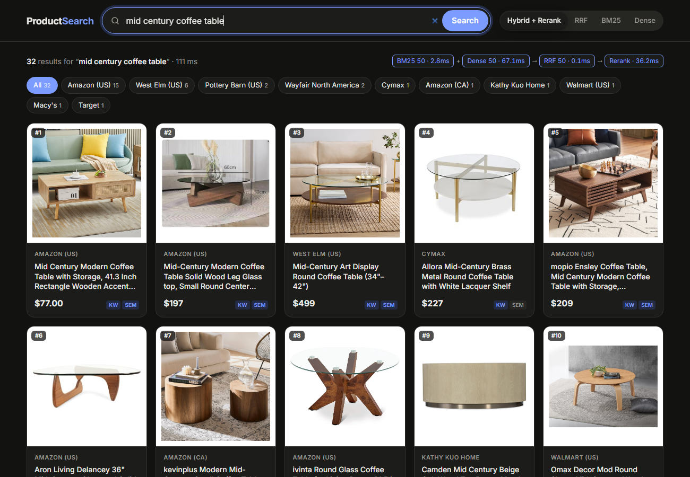
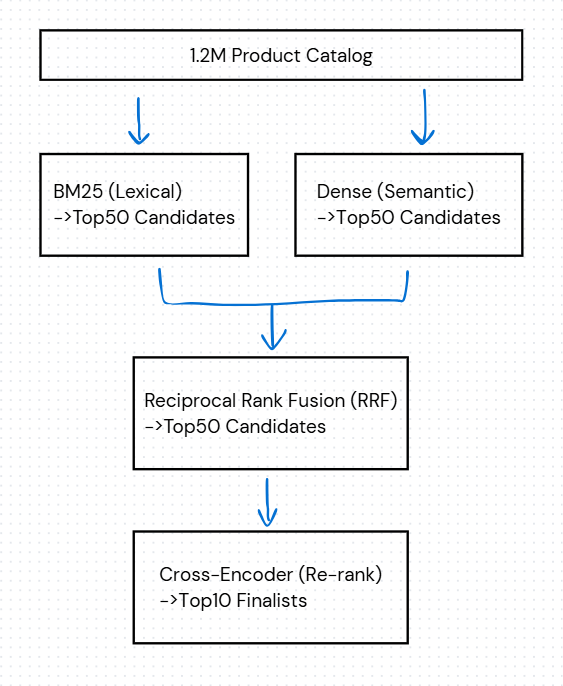

A four-stage text search pipeline: BM25 for exact brands and specs, dense retrieval for paraphrases, rank fusion to merge them, and a cross-encoder to rerank. On Amazon ESCI it lifts Hits@1 from 0.296 to 0.374 over BM25 alone.
Image search adds search by description, by uploaded photo, or by "more like this", using SigLIP 2 photo matches blended with MiniLM title matches. Vision-labeled color and category filters cover all 23.8k products.
Evals on 2,000+ LLM-written shopper queries drove the design: equal-weight fusion collapsed on queries that describe the photo, and a 70/30 score blend raised MRR@10 from 0.527 to 0.624. It runs as a FastAPI service on Fly.io.
The hosted image search: text search, color and category filters, "more like this", search with an uploaded photo, and the search methods side by side
MRR@10 [Recall@10] on held-out products. Queries were LLM-written from the product's brand, photo, or text, and fusion weights were tuned on the other half of the products.
| Method | From brand | From image | From text | Mean |
|---|---|---|---|---|
| Title only (MiniLM) | 0.772 [0.88] | 0.162 [0.29] | 0.438 [0.60] | 0.457 |
| Photo only (SigLIP 2) | 0.594 [0.79] | 0.599 [0.79] | 0.457 [0.69] | 0.550 |
| Equal-weight RRF (first design) | 0.759 [0.91] | 0.310 [0.52] | 0.511 [0.70] | 0.527 |
| Score blend, w = 0.7 (shipped) | 0.822 [0.96] | 0.495 [0.70] | 0.554 [0.74] | 0.624 |
| Score blend, w = 0.8 | 0.781 [0.94] | 0.536 [0.75] | 0.536 [0.73] | 0.618 |
8,955 judged queries over 1.2M products. Each row adds or swaps one stage of the pipeline.
| Pipeline | Hits@1 | Hits@5 | Hits@10 | MRR@10 |
|---|---|---|---|---|
| BM25 | 0.296 | 0.502 | 0.581 | 0.385 |
| Dense (MiniLM-L6) | 0.249 | 0.462 | 0.560 | 0.340 |
| Dense (BAAI bge-small) | 0.286 | 0.498 | 0.594 | 0.378 |
| RRF (dense + BM25) | 0.315 | 0.532 | 0.630 | 0.413 |
| RRF + cross-encoder rerank | 0.374 | 0.612 | 0.685 | 0.474 |
The top result is an exact match for 26% more queries than with BM25 alone, measured on 8,955 judged ESCI queries.
Relevant products rank higher on average. The cross-encoder rerank delivered the largest single-stage gain.
Blending normalized photo and title scores replaced equal-weight rank fusion. The blend no longer collapses on queries that describe the photo, and it beats both sides on brand queries.
Evals ruled out three plausible features: weighted rank fusion, boosting by the color named in the query, and 8-bit models, which dropped photo search MRR@10 from 0.971 to 0.087.
End-to-end latency for all four stages over 423k products, using exact FAISS search on an RTX 5050 laptop GPU.
The embedding model is a swappable component, so the MiniLM vs. BAAI bge-small comparison changed only the encoder.
BM25 and dense retrieval each pull 50 candidates, merged with Reciprocal Rank Fusion because their failure modes barely overlap.
A cross-encoder scores each (query, title) pair jointly, demoting look-alikes such as "AeroPress Movie" below actual coffee makers.
Switch between BM25, dense, RRF, and the full pipeline on the same query, with per-stage latency and badges showing which retriever found each result.
Each product's detail panel shows its rank at every stage, making it easy to see how fusion and reranking changed the order.
Describe a product, drop in your own photo, or click "more like this" to search by a product's image, using SigLIP 2 embeddings blended with MiniLM title matches.
A vision model labeled all 23.8k products with one of 16 colors and a Google-taxonomy category. A 300-product pilot showed that fixed-choice labels beat free-form ones.
Shopper queries are generated through an LLM gateway, with one writer model so only the input varies. 1,000 requests take 2 minutes instead of over an hour on a laptop.
A FastAPI service on Fly.io with the models and index baked into the Docker image. Sizing torch threads to the container's CPU limit cut queries from 18 s to about 0.1 s.
Search UI with per-stage latency, store filters, and retrieval badges

Pipeline: BM25 + dense retrieval → RRF → cross-encoder rerank